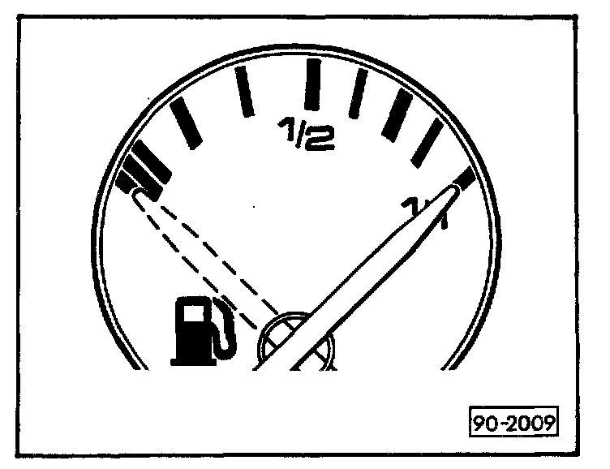
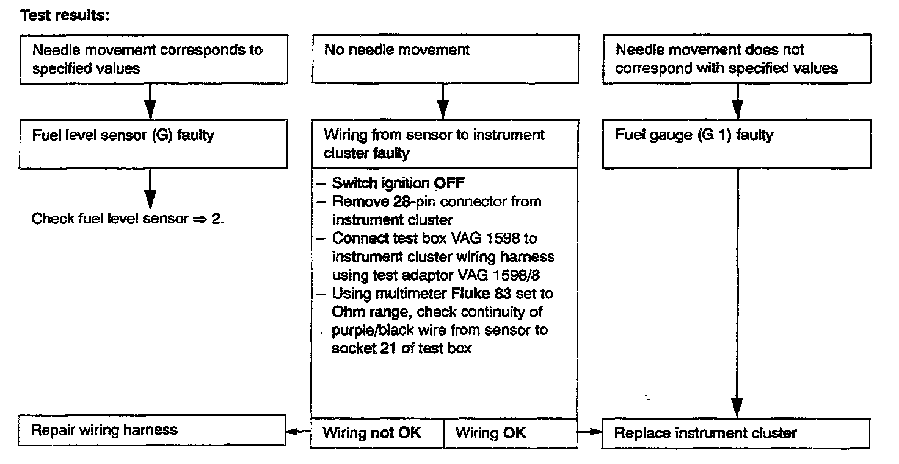

Checking Fuel Gauge (Fuel Gauge Inaccurate)
The following tools are required when troubleshooting the fuel gauge.
- Digital multimeter Fluke 83
- Instrument tester VW 1301
- Connector test kit VW 1594
- Valid wiring diagram
- Repair Manual, Engine - Repair Group 20
- Fuel storage cart Tempo Products FM 3000 or equivalent


1. FUEL GAUGE, CHECKING
NOTE: If the fuel gauge and Engine Coolant Temperature (ECT) gauge simultaneously indicate false readings, replace the instrument cluster.
Troubleshooting preparations:
- Remove connector from fuel level sensor (G).
- Connect instrument tester VW 1301 to purple/black wire and brown/black wire using connector test kit VW 1594.
- Use valid wiring diagram to check wiring!
Set following values on tester VW 1301:
55 See Fuel gauge needle reads full = 1/1
160 See Fuel gauge needle reads 1/2
570 See Fuel gauge needle reads empty (last line at left end of scale)
Permissible deviation: One needle width!